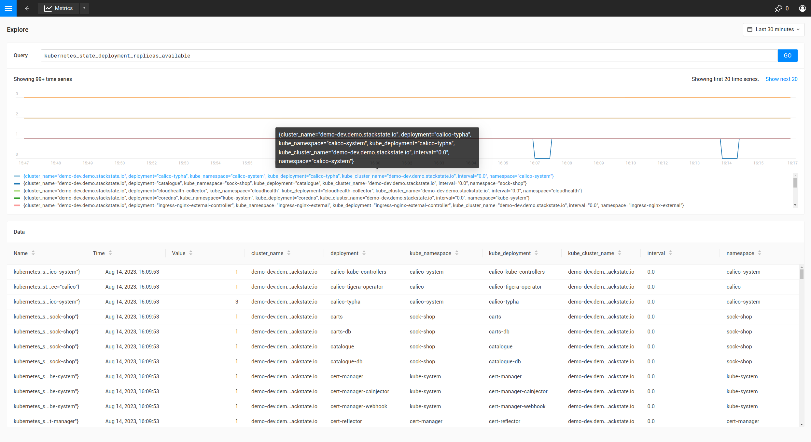

Add a threshold monitor to components using the CLI
Overview
SUSE Observability provides monitors out of the box, which provide monitoring on common issues that can occur in a Kubernetes cluster. It’s also possible to configure custom monitors for the metrics collected by SUSE Observability or application metrics ingested from Prometheus.
Steps
Steps to create a monitor:
As an example the steps will add a monitor for the Replica counts of Kubernetes deployments.
Write the outline of the monitor
Create a new YAML file called monitor.yaml and add this YAML template to it to create your own monitor. Open it in your favorite code editor to change it throughout this guide. At the end the SUSE Observability CLI will be used to create and update the monitor in SUSE Observability.
nodes:
- _type: Monitor
arguments:
metric:
query:
unit:
aliasTemplate:
comparator:
threshold:
failureState:
urnTemplate:
titleTemplate:
description:
function: {{ get "urn:stackpack:common:monitor-function:threshold" }}
identifier: urn:custom:monitor:...
intervalSeconds: 30
name:
remediationHint:
status:
tags: {}
The fields in this template are:
-
_type: SUSE Observability needs to know this is a monitor so, value always needs to beMonitor -
query: A PromQL query. Use the metric explorer of your SUSE Observability instance, http://your-instance/#/metrics, and use it to construct query for the metric of interest. -
unit: The unit of the values in the time series returned by the query or queries, used to render the Y-axis of the chart. See the supported units reference for all units. -
aliasTemplate: An alias for time series in the metric chart. This is a template that can substitute labels from the time series using the${my_label}placeholder. -
comparator: Choose one of LTE/LT/GTE/GT to compare the threshold against the metric. Time series for which<metric> <comparator> <threshold>holds true will produce the failure state. -
threshold: A numeric threshold to compare against. -
failureState: Either "CRITICAL" or "DEVIATING". "CRITICAL" will show as read in SUSE Observability and "DEVIATING" as orange, to denote different severity. -
urnTemplate: A template to construct the urn of the component a result of the monitor will be bound to. -
titleTemplate: A title for the result of a monitor. Because multiple monitor results can bind to the same component, it’s possible to substitute time series labels using the${my_label}placeholder. -
description: A description of the monitor. -
function: A reference to the monitor function that will execute the monitor. Currently only{{ get "urn:stackpack:kubernetes-v2:shared:monitor-function:threshold" }}is supported. -
identifier: An identifier of the formurn:custom:monitor:....which uniquely identifies the monitor when updating its configuration. -
intervalSeconds: The interval at which the monitor executes. For regular real-time metric 30 seconds is advised. For longer-running analytical metric queries a bigger interval is recommended. -
name: The name of the monitor -
remediationHint: A description of what the user can do when the monitor fails. The format is markdown, with optionally use of handlebars variables to customize the hint based on time series or other data (more explanation below). -
status: Either"DISABLED"or"ENABLED". Determines whether the monitor will run or not. -
tags: Add tags to the monitor to help organize them in the monitors overview of your SUSE Observability instance, http://your-SUSE Observability-instance/#/monitors
For example, this could be the start for a monitor which monitors the available replicas of a deployment:
nodes:
- _type: Monitor
arguments:
metric:
query: "kubernetes_state_deployment_replicas_available"
unit: "short"
aliasTemplate: "Deployment replicas"
comparator: "LTE"
threshold: 0.0
failureState: "DEVIATING"
urnTemplate:
description: "Monitor whether a deployment has replicas.
function: {{ get "urn:stackpack:kubernetes-v2:shared:monitor-function:threshold" }}
identifier: urn:custom:monitor:deployment-has-replicas
intervalSeconds: 30
name: Deployment has replicas
remediationHint:
status: "ENABLED"
tags:
- "deployments"
The urnTemplate and remediationHint will be filled in the next steps.
Bind the results of the monitor to the correct components
The results of a monitor need to be bound to components in SUSE Observability, to be visible and usable. The result of a monitor is bound to a component using the component identifiers. Each component in SUSE Observability has one or more identifiers that uniquely identify the component. To bind a result of a monitor to a component, it’s required to provide the urnTemplate. The urnTemplate substitutes the labels in the time series of the monitor result into the template, producing an identifier matching a component. This is best illustrated with the example:
The metric that’s used in this example is the kubernetes_state_deployment_replicas_available metric. Run the metric in the metric explorer to observe what labels are available on the time series:

In the above table it’s shown the metric has labels like cluster_name, namespace and deployment.
Because the metric is observed on deployments, it’s most logical to bind the monitor results to deployment components. To do this, it’s required to understand how the identifiers for deployments are constructed:
-
In the UI, navigate to the
deploymentsview and select a single deployment. -
Open the
Topologyview, and click the deployment component. -
When expanding the
Propertiesin the right panel of the screen, the identifiers will show after hovering as shown below:

The identifier is shown as urn:kubernetes:/preprod-dev.preprod.stackstate.io:calico-system:deployment/calico-typha. This shows that the identifier is constructed based on the cluster name, namespace and deployment name. Knowing this, it’s now possible to construct the urnTemplate:
...
urnTemplate: "urn:kubernetes:/${cluster_name}:${namespace}:deployment/${deployment}"
...
To verify whether the urnTemplate is correct, is explained further below.
Write the remediation hint
The remediation hint is there to help users find the cause of an issue when a monitor fires. The remediation hint is written in markdown. It’s also possible to use the labels that are on the time series of the monitor result using a handlebars template, as in the following example:
...
remediationHint: |-
To remedy this issue with the deployment {{ labels.deployment }}, consider taking the following steps:
1. Look at the logs of the pods created by the deployment
...
Create or update the monitor in SUSE Observability
After completing the monitor.yaml, use the SUSE Observability CLI to create or update the monitor:
sts monitor apply -f monitor.yamlVerify whether the monitor produces the expected results, using the steps below.
|
The identifier is used as the unique key of a monitor. Changing the identifier will create a new monitor instead of updating the existing one. |
The sts monitor command has more options, for example it can list all monitors:
sts monitor listTo delete a monitor use
sts monitor delete --id <id>To edit a monitor, edit the original of the monitor that was applied, and apply again. Or there is a sts monitor edit command to edit the configured monitor in the SUSE Observability instance directly:
sts monitor edit --id <id>The <id> in this command isn’t the identifier but the number in the Id column of the sts monitor list output.
Enable or disable the monitor
A monitor can be enabled or disabled. Enabled means the monitor will produce results, disabled means it will suppress all output. Use the following commands to enable/disable:
sts monitor enable/disable --id <id>Verifying the results of a monitor
It’s good practice to, after a monitor is made, validate whether it produces the expected result. The following steps can be taken:
Verify the execution of the monitor
Go to the monitor overview page (http://your-SUSE Observability-instance/#/monitors) and find your monitor.
-
Verify the
Statuscolumn is inEnabledstate. If the monitor is inDisabledstate, enable it. If the status is inErrorstate, follow the steps below to debug. -
Verify you see the expected amount of states in the
Clear/Deviating/Criticalcolumn. If the number of states is significantly lower or higher than the amount of components you meant to monitor, the PromQL query might be giving too many results.
Verify the binding of the monitor
Observe whether the monitor is producing a result on one of the components that it’s meant to monitor for. If the monitor doesn’t show up, follow these steps to remedy.
Common issues
The result of the monitor isn’t showing on a component
First check if the monitor is actually producing results. If this is the case but the monitor results do not show up on the components, there might be a problem with the binding. First use the following command to verify:
sts monitor status --id <id>If the output has Monitor health states with identifier which has no matching topology element (<nr>): ...., this shows that the urnTemplate may not generate an identifier matching the topology. To remedy this revisit your urnTemplate.